Xampp es una distribución de Apache de sofware libre que contiene MariaDB, PHP y Perl.
Apache es un servidor que nos permitirá alojar nuestra página web. MariaDB es un sistema gestor de base de datos y PHP es un lenguaje del lado del servidor que conectará nuestra base de datos con la página web.
El proceso de instalación de Xampp en EducaAndOS es sencillo: solo tenemos que buscar el programa en el centro de software (accesible desde el menú Aplicaciones > Herramientas del sistema > Centro de software).
Una vez localizado el programa, solo tendremos que seleccionar el botón de instalar
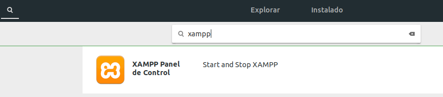
Si queremos instalar el programa en Windows, se deben seguir las instrucciones de la página oficial. Simplemente se debe descargar y ejecutar el instalador.
Si ejecutamos Xampp se mostrará el panel de control:
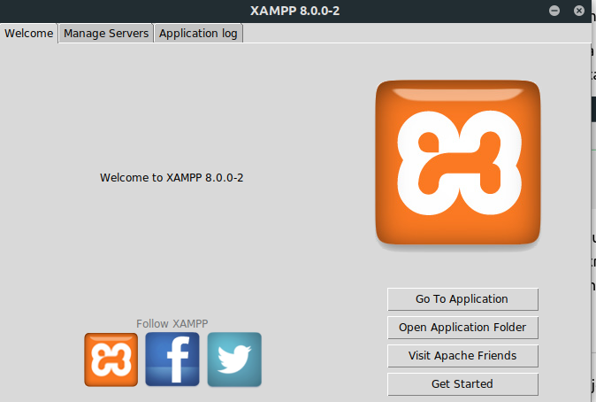
Para ver el estado de los servidores seleccionamos la segunda pestaña (Manage servers):
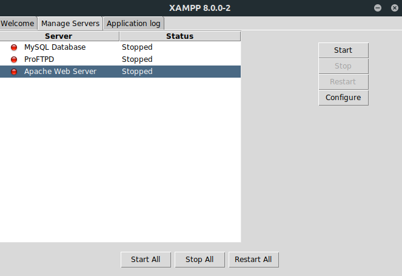
Para nuestra práctica no usaremos ProFTPD. Por eso solo tenemos que iniciar MySQL Database y Apache Web Server. Para ello, seleccionamos el servidor correspondiente y pulsamos el botón start.
Si todo ha funcionado correctamente, el círculo cambiará al color verde y se mostrará el estado Running.
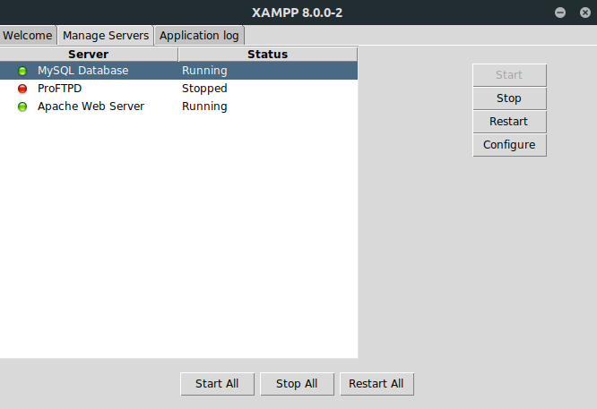
Para acceder a la página de inicio del servidor escribimos la url http://localhost en cualquier navegador. Debería mostrarse una página similar a la siguiente:
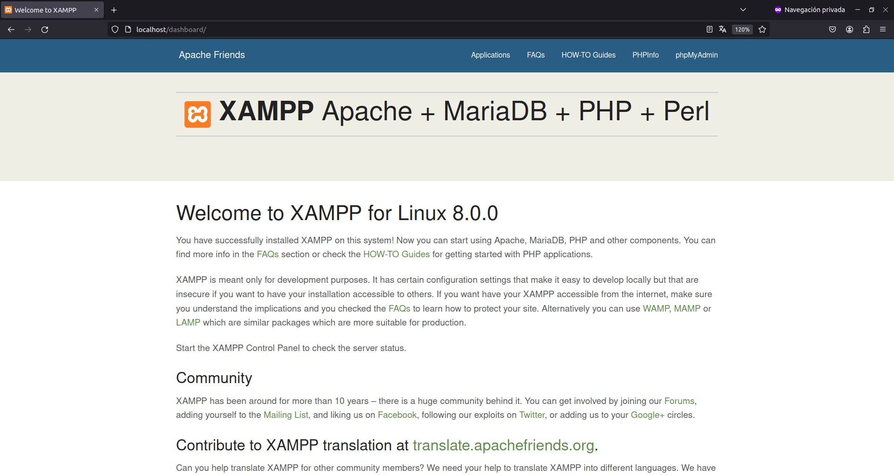
Si queremos acceder a la base de datos, usaremos la herramienta phpMyAdmin que viene incluida en Xampp:
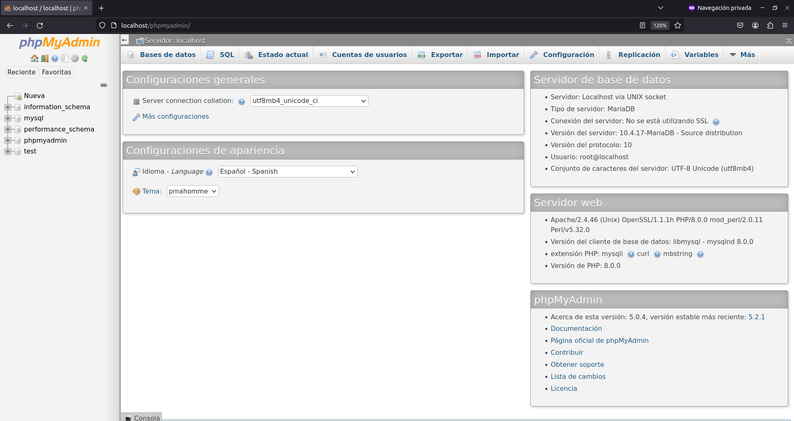
Antes de comenzar a programar la conexión de la página web con la base de datos es necesario preparar el entorno de trabajo. Estos pasos se realizarán solo una vez al principio: después se continuará modificando los archivos con Visual Studio Code como en prácticas anteriores.
En esta sección aprenderemos a crear una base de datos de ejemplo con phpMyAdmin que usaremos a lo largo de todo el tutorial.
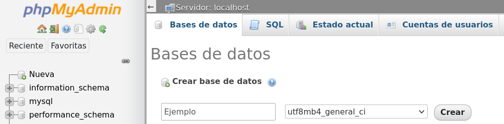
Escribiremos el nombre de la base de datos (Ejemplo) y pulsaremos el botón Crear
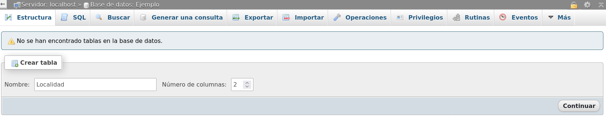
Definimos los campos como se puede observar en la siguiente imagen:
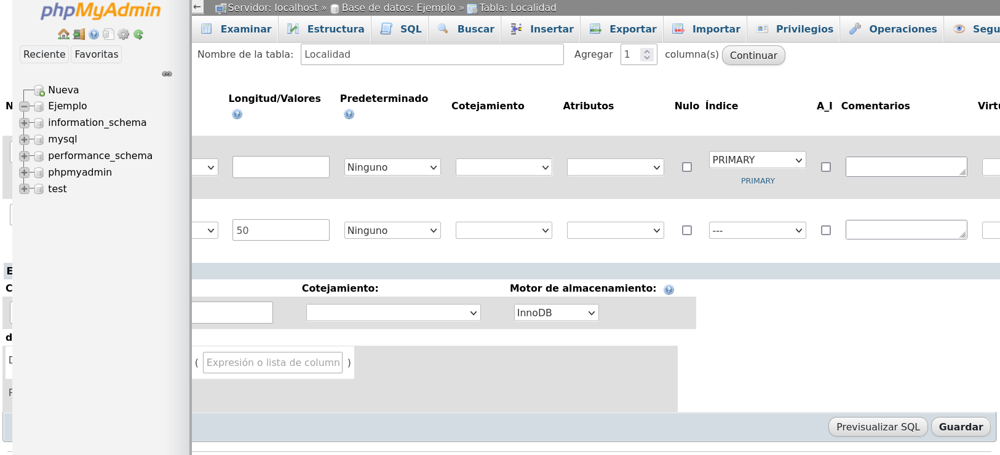
Cuando hayamos completado todos los datos pulsamos el botón Guardar y se mostrará la estructura de la tabla creada:
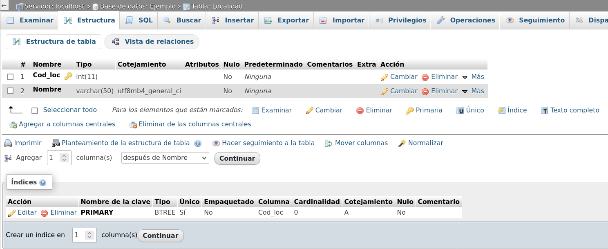
Finalmente, insertamos algunos datos de ejemplo en la tabla (con dos filas es suficiente). Para ello, se selecciona la opción insertar:
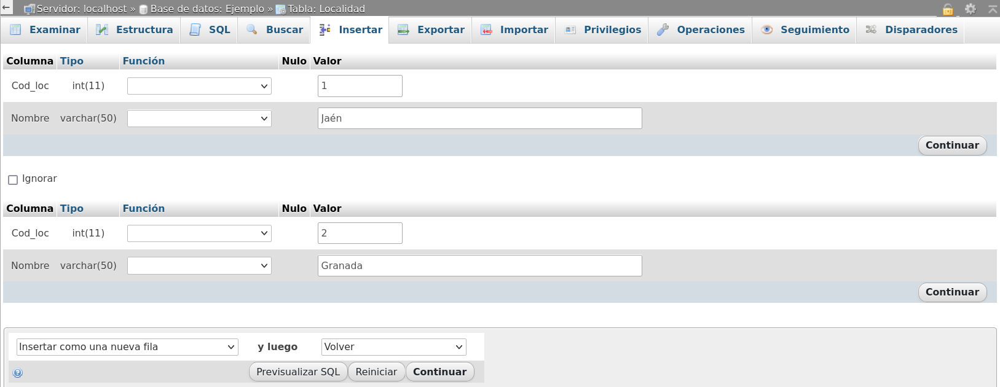
Pulsamos el botón Continuar y los datos se almacenarán en la tabla:
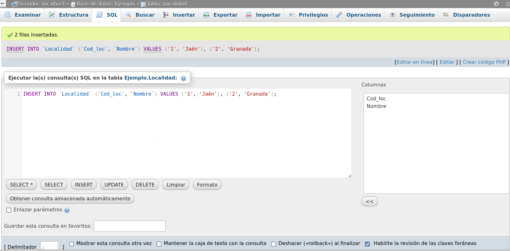
Si seleccionamos la opción Examinar comprobaremos que los datos se han guardado correctamente:
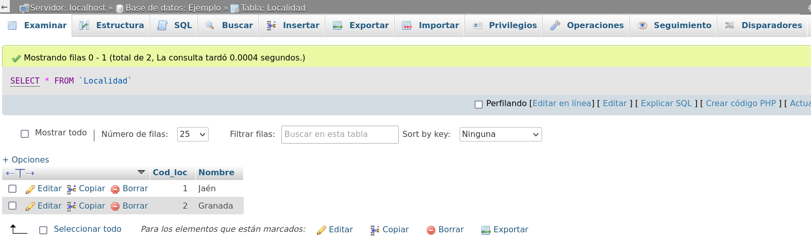
Vamos a crear un usuario en la base de datos que será el que se utilice posteriormente para acceder desde PHP a los datos de las tablas. Para ello, en la ventana de phpMyAdmin seleccionamos la opción cuentas de usuario.
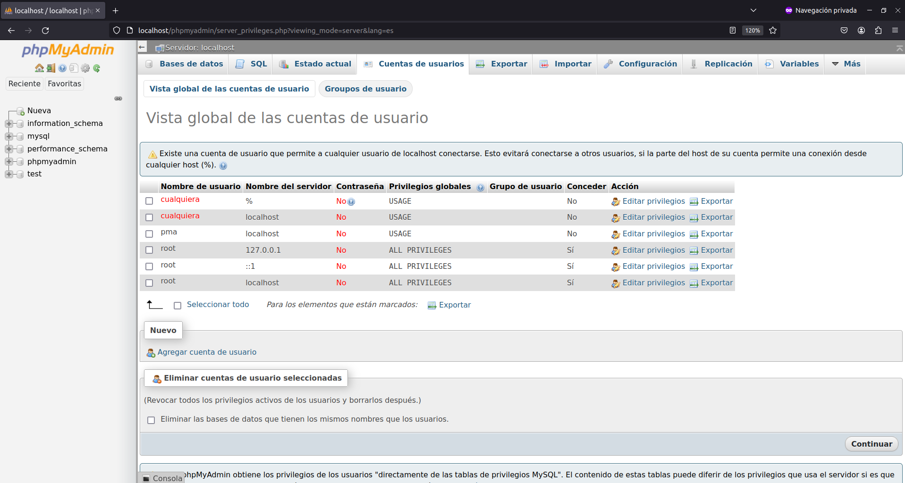
Seleccionamos la opción Agregar cuenta de usuario (sección nuevo):
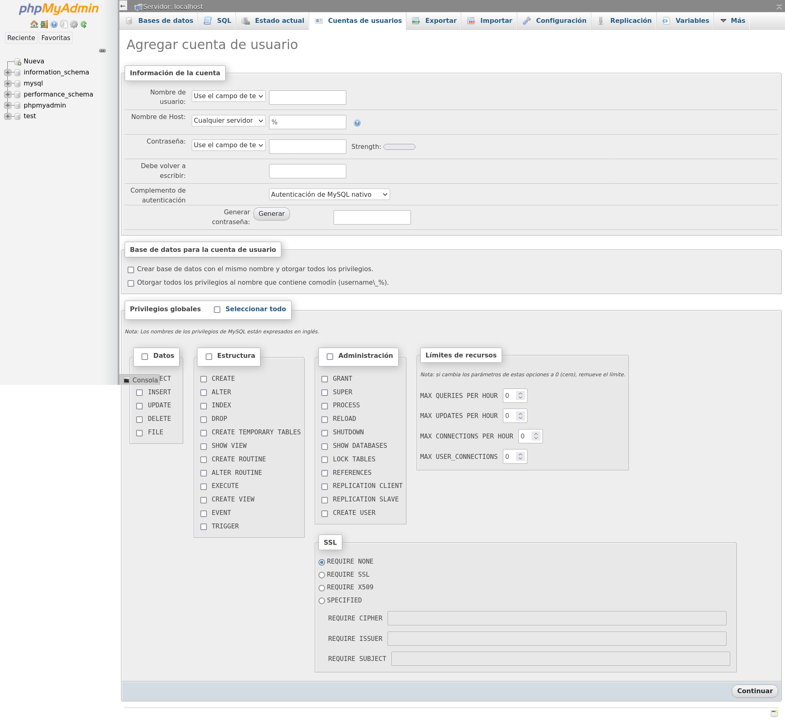
Rellenamos los campos correspondientes al nombre del usuario y la contraseña. Elegimos una contraseña que sea fuerte (el propio nombre nos indica la robustez de la misma). En el campo nombre de host elegimos Local (localhost).
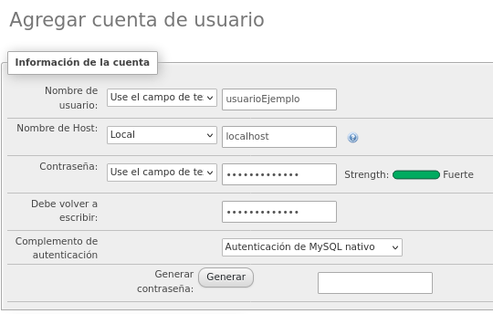
A continuación, le daremos privilegios al usuario para que pueda crear, modificar y borrar tablas, así como seleccionar, insertar y modificar archivos. Para ello, seleccionamos las opciones que se muestran en la siguiente imagen:
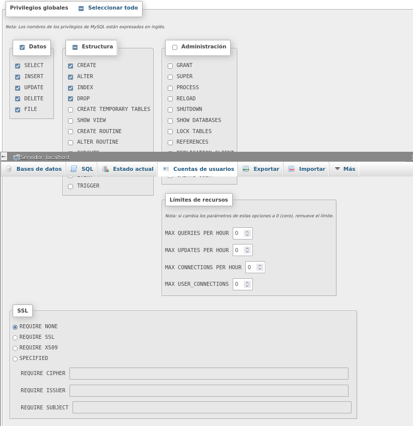
Seleccionamos el botón continuar y el usuario debería haberse creado correctamente:
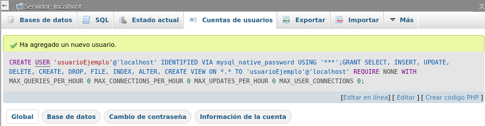
Una vez creado el usuario, hay que darle permisos para que pueda acceder a la base de datos de ejemplo que hemos creado anteriormente. Para ello, seleccionamos la opción Cuentas de usuario y pulsamos sobre Editar privilegios sobre el usuario que acabamos de crear:
A continuación, seleccionamos la opción Bases de datos y elegimos Ejemplo (la base de datos que hemos creado anteriormente):
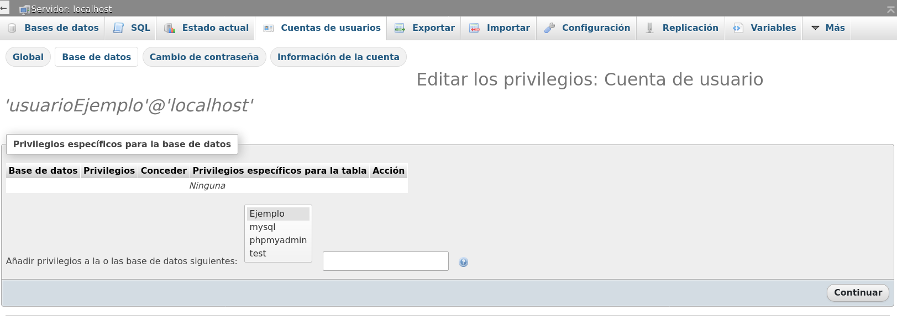
Pulsamos continuar y marcamos los que se observan en la siguiente imagen: 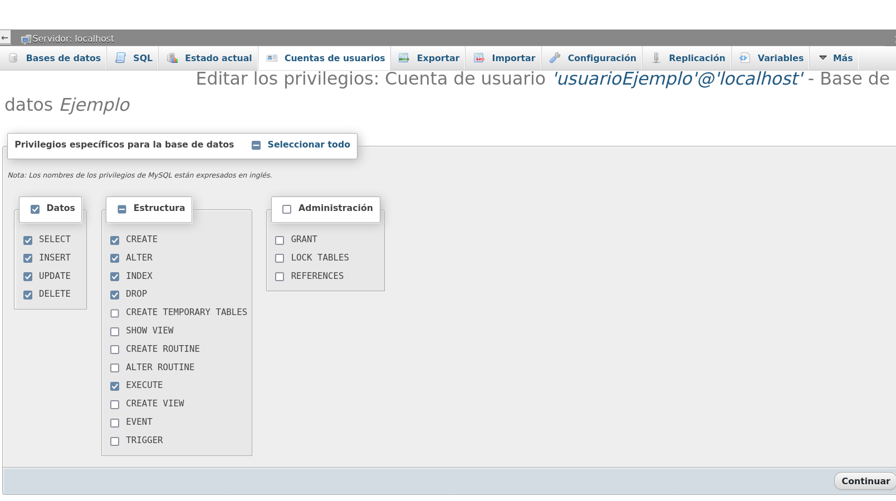
Para confirmar, pulsamos nuevamente en el botón continuar. Si no se ha producido ningún problema, se mostrará el siguiente mensaje:
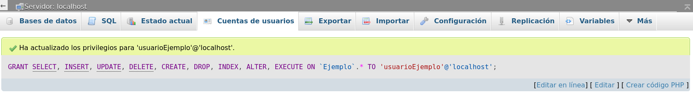
Cuando trabajamos con el servidor Apache todos los archivos públicos se deben ubicar en la carpeta htdocs del servidor. Es decir, si queremos que un archivo html sea accesible desde el servidor tendrá que estar almacenado en dicho directorio.
En EducaAndOs esta carpeta está en la ruta /var/chroot/opt/lampp/htdocs. También podemos acceder al directorio pulsando el botón Open application folder de la ventana del panel de control
Si entramos en la carpeta Apache encontraremos una distribución similar a la siguiente:
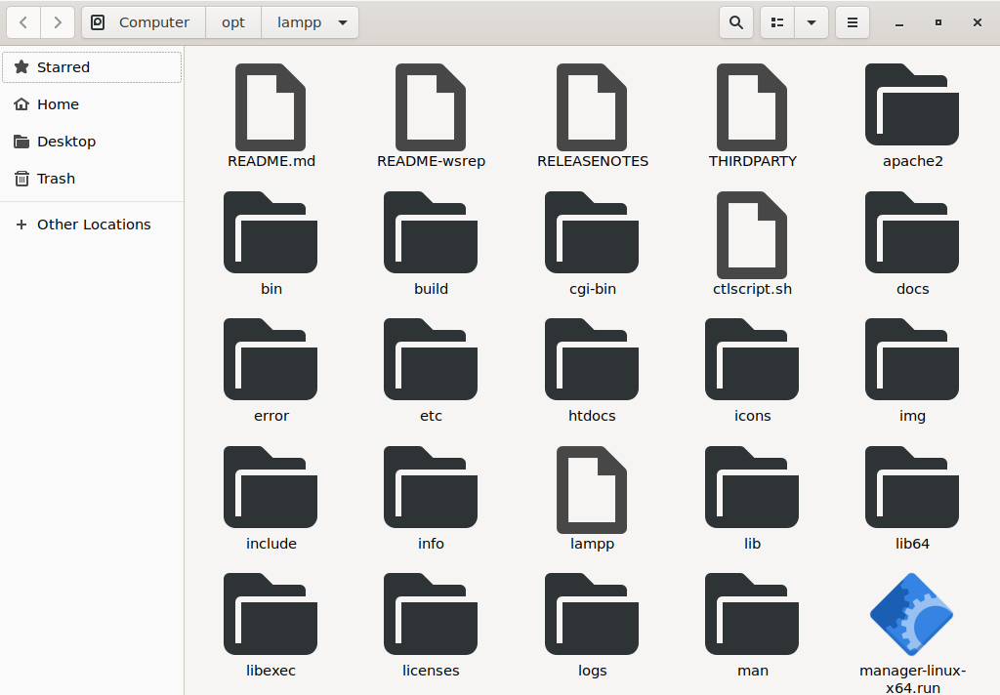
En el caso de Windows, generalmente la carpeta htdocs estará en la ruta C:\xampp si no se ha modificado el directorio durante el proceso de instalación.
Si entramos en la carpeta htdocs veremos un contenido similar al de la siguiente imagen:
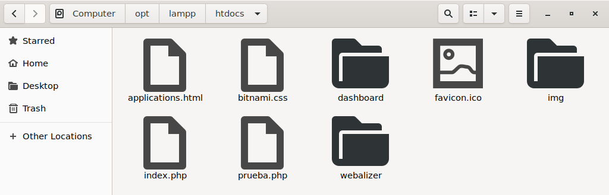
Como podemos observar, tenemos una carpeta img para las imágenes y un archivo index.php. Si en el navegador escribimos http://localhost/index.php veremos el contenido de ese fichero:
Vamos a continuar usando la carpeta del proyecto que tenemos creada de las fases anteriores. Para que los archivos sean accesibles desde el servidor tenemos que copiar el directorio en la carpeta htdocs.
En el manual vamos a suponer que la carpeta se llama ProyectoWebPyC. Comprobaremos que los archivos se han copiado correctamente escribiendo en el navegador la ruta http://localhost/ProyectoWebPyC/index.html.
En la ruta anterior es importante tener en cuenta tres elementos:
En un servidor si se incluye solo la ruta http://localhost/carpeta se buscarán los archivos index.php o index.html para cargarlos. Siguiendo con nuestro ejemplo, la ruta http://localhost/ProyectoWebPyC/index.html y http://localhost/ProyectoWebPyC deberían mostrar el mismo resultado.
Una vez que hemos copiado la carpeta con todos los archivos en htdocs, el siguiente paso es abrirla con Visual Studio Code. Para ello, usamos la opción Open folder:
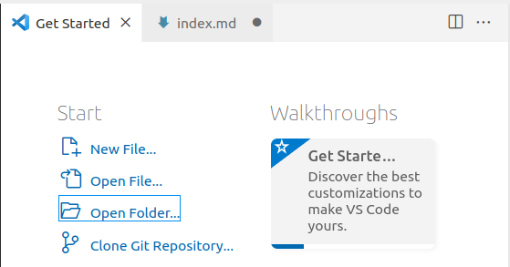
Y buscamos la ruta correspondiente:
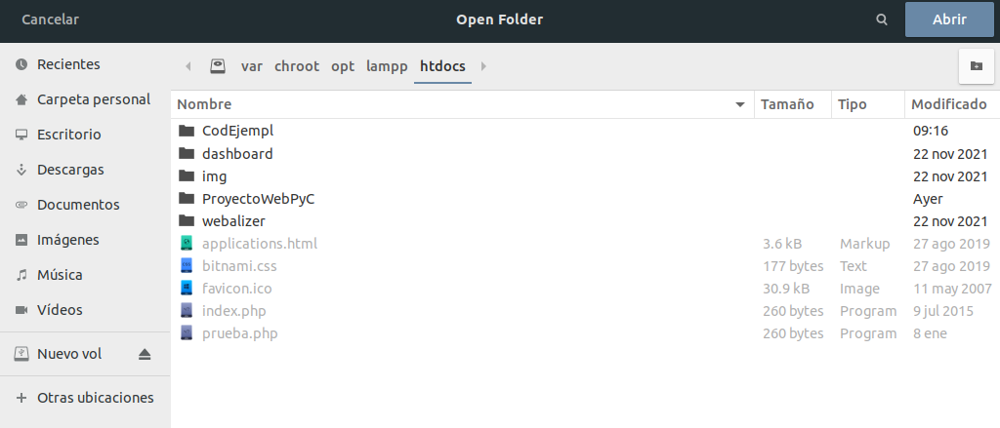
En esta sección estudiaremos mediante ejemplos cómo trabajar con bases de datos en PHP. Antes de comenzar, veremos algunas características básicas del lenguaje PHP:
<?php y ?>. Todos los comandos acaban en ;echo$variableCadena="valor";$variableEntera=10;$variableDecimal=10.0;$variableBooleana=false;El primer paso que debemos hacer es crear una conexión a la base de datos desde un archivo php. Para ello, usaremos el siguiente código:
<?php
$nombreServidor = "localhost";
$baseDatos = "Ejemplo";
$nombreUsuario = "usuarioEjemplo";
$password = "usuarioEjemplo";
// Se crea la conexión
$conn = new mysqli($nombreServidor, $nombreUsuario, $password, $baseDatos);
// Se comprueba que la conexión es correcta
if (!$conn) {
die("Connection failed: " . mysqli_connect_error());
}
mysqli_close($conn);
?>
Vamos a explicar qué significa cada instrucción:
msyqli que utiliza como parámetros el nombre del servidor de datos, el usuario, su contraseña y la base de datos a la que se va a conectar.false) se muestra el error usando la función mysqli_connect_error() y finaliza la ejecución del código php con la función diemysqli_closeExisten varias funciones para ejecutar una sentencia en una base de datos desde PHP. En este tutorial usaremos query.
<?php
$nombreServidor = "localhost";
$baseDatos = "Ejemplo";
$nombreUsuario = "usuarioEjemplo";
$password = "usuarioEjemplo";
// Se crea la conexión
$conn = new mysqli($nombreServidor, $nombreUsuario, $password, $baseDatos);
// Se comprueba que la conexión es correcta
if (!$conn) {
die("Connection failed: " . mysqli_connect_error());
}
echo "Conexión correcta";
$sentenciaSQL="INSERT INTO Localidad VALUES(3,'Córdoba')";
if (!$conn->query($sentenciaSQL)) {
echo "Falló la inserción de datos en la tabla: (" . $conn->errno . ") " . $conn->error;
}
echo "Se ha ejecutado correctamente la inserción de datos";
mysqli_close($conn);
?>
Describimos el código paso a paso:
$sentenciaSQL) con el código SQL necesario para insertar una nueva fila de datos en la tabla (INSERT INTO Localidad VALUES(3,'Córdoba'))$conn->query($sentenciaSQL). Este comando ejecuta la instrucción que se pasa como parámetro (INSERT en nuestro ejemplo) sobre la conexión de la base de datos ($conn).if (!$conn->query($sentenciaSQL)). Si se cumple la condición, significa que se ha producido algún error durante la inserción de datos.echo y se mostrará el texto "Se ha ejecutado correctamente la inserción de datos".Para ejecutar el código anterior escribimos en el navegador la ruta hasta el archivo php. Por ejemplo, https://localhost/Ejemplo/conexion.php si guardamos el código anterior en la carpeta Ejemplo del servidor con el nombre conexion.php. El resultado debe ser el siguiente:
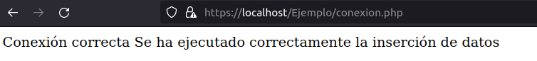
Si entramos en phpMyAdmin podremos comprobar que la fila de datos se ha insertado correctamente en la tabla localidad:
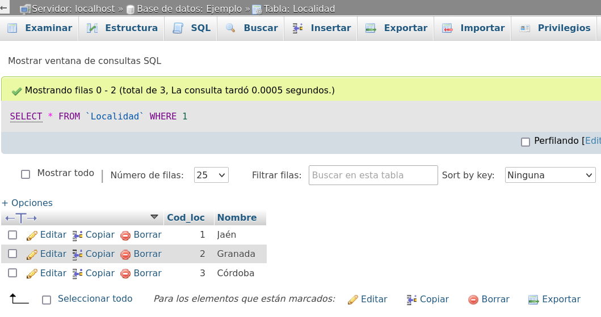
Una de las características fundamentales de PHP es que permite gestionar formularios HTML. Es importante entender que cualquier elemento de un formulario será accesible desde un script de PHP.
Por ejemplo, partimos del siguiente formulario:
<html>
<head>
</head>
<body>
<form action="registro.php" method="post" accept-charset="utf-8">
<p>Nombre: <input type="text" name="nombre" id="nombre"/></p>
<p>Precio: <input type="number" name="precio" id="precio" /></p>
<p><input type="submit" /></p>
</form>
</body>
</html>
El único elemento nuevo que hemos incluido es que acepte los datos de la codificación utf-8 para que las tildes se envíen correctamente (accept-charset="utf-8").
El resultado en el navegador sería:
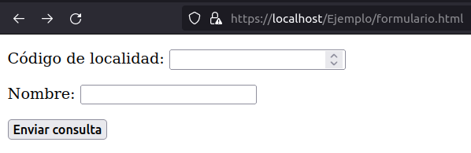
Cuando el usuario rellene el formulario y pulsa sobre el botón de enviar, se ejecutará el código del archivo registro.php. Supongamos que tiene las siguientes instrucciones:
Código de localidad: <?php echo $_POST['codigo']; ?>.
<p>
Nombre: <?php echo $_POST['nombre']; ?>
</p>
Si lo ejecutamos en nuestro servidor el resultado será similar a:
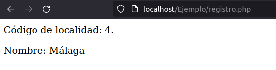
Combinando lo que hemos visto en este apartado y en el anterior, podemos crear el código php necesario para insertar los datos del formulario en la base de datos cuando se pulse el botón de enviar. En este caso, el fichero php sería:
<?php
$nombreServidor = "localhost";
$baseDatos = "Ejemplo";
$nombreUsuario = "usuarioEjemplo";
$password = "usuarioEjemplo";
// Se crea la conexión
$conn = new mysqli($nombreServidor, $nombreUsuario, $password, $baseDatos);
// Se comprueba que la conexión es correcta
if (!$conn) {
die("Connection failed: " . mysqli_connect_error());
}
$codLoc = $_POST['codigo'];
$nombreLoc = $_POST['nombre'];
$sentenciaSQL = "INSERT INTO Localidad VALUES(" . $codLoc. ",'" . $nombreLoc . "')";
echo $sentenciaSQL;
if (!$conn->query($sentenciaSQL)) {
echo "Falló la inserción de datos en la tabla: (" . $conn->errno . ") " . $conn->error;
}
echo "Se ha ejecutado correctamente la inserción de datos";
?>
Vamos a detallar el funcionamiento del código:
$codLoc y $nombreLoc para almacenar los datos del formulario)$sentenciaSQL que almacenará el código de la sentencia INSERT INTO
INSERT INTO Localidad values(.) indicando el nombre de la variable (sería . $codLoc)$nombreLoc y el paréntesis finalecho $sentenciaSQL no es necearia, pero ayuda a ver los posibles errores, ya que nos permite ver qué comando estamos ejecutando en la base de datos. Durante el procedimiento de depuración es recomendable visualizar esta variable, aunque evidentemente luego se elimine en la versión final del sitio web. Mantener esta instrucción visible en una página web sería un problema de seguridad.Si ejecutamos el código anterior y accedemos a phpMyAdmin podremos comprobar que en la base de datos se ha insertado la nueva localidad de forma correcta:
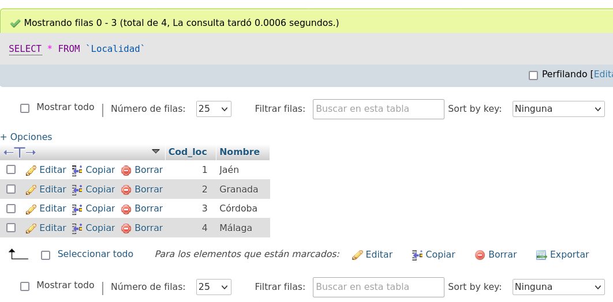